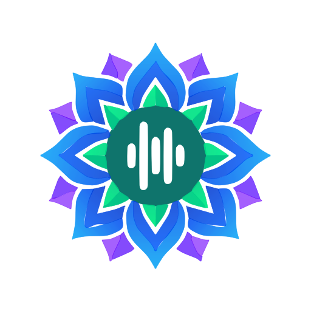

Uktam.aiSpeak Hear No internet.
→ / translated on device
Real-time Indic speech translation that runs entirely on your Android device.
4 languages · 0 network calls · GPL-3.0

Uktam.ai→ / translated on device
Real-time Indic speech translation that runs entirely on your Android device.
4 languages · 0 network calls · GPL-3.0